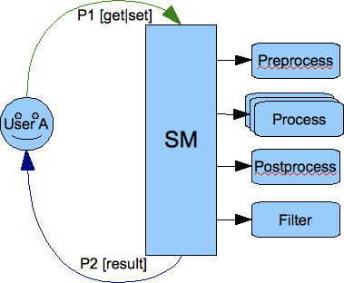

Table of Contents
Artur Hefczyc <artur.hefczyc@tigase.net> v2.0, June 2014: Reformatted for AsciiDoc. :website: http://tigase.net/ :Date: 2010-04-06 21:22
For the Tigase server plugin development it is important to understand how it all works. There are different kind of plugins responsible for processing packets at different stages of the data flow. Please read the introduction below before proceeding to the actual coding part.
In the Tigase server plugins are pieces of code responsible for processing particular XMPP stanza. A separate plugin might be responsible for processing messages, a different one for processing presences, and there might a separate plugins responsible for iq roster, different for iq version and so on.
A plugin provides information about what exact XML element(s) name(s) with xmlns it is interested in. So you can create a plugin which is interested in all packets containing caps child.
There might be no plugin for a particular stanza element and then a default actions is used which is simple forwarding stanza to a destination address. There might be also more than one plugin for a specific XML element and then they all process the same stanza simultaneously in separate threads so there is no guarantee on the order in which the stanza is processed by a different plugins.
Each stanza goes through the Session Manager component which processes packets in a few steps. Have a look at the picture below:
The picture shows that each stanza is processed by the session manager in 4 steps:
- Pre-processing - all loaded pre-processors receive the packet for processing. They work within session manager thread and they have no internal queue for processing. As they work within Session Manager thread it is important that they limit processing time to absolute minimum as they may affect the Session Manager performance The intention for the pre-processors is to allow them for packet blocking. If the pre-processing result is true then the packet is blocked and no further processing is performed.
- Processing - this is the next step the packet gets through if it wasn’t blocked by any of the pre-processors. It gets inserted to all processors queues which requested interest in this particular XML element. Each processor works in a separate thread and has own internal fixed size processing queue.
- If there is no processor for the stanza then the packet goes through all post-processors. The last post-processor in built into session manager post-processor which tries to apply a default action to a packet which hasn’t been processed in step 2. Normally the default action is just forwarding the packet to a destination. Most commonly it is applied to <message/> packets.
- Finally, if any of above 3 steps produced output/result packets all of them go through all filters which may or may not block them.
Important thing to note is that we have two kinds or two places where packets may be blocked or filtered out. One place is before packet is processed by the plugin and another place is after processing where filtering is applied to all results generated by the processor plugins.
It is also important to note that session manager and processor plugins act as packet consumers. The packet is taken for processing and once processing is finished the packet is destroyed. Therefore to forward a packet to a destination one of the processor must create a copy of the packet, set all properties and attributes and return it as a processing result. Of course processor can generate any number of packets as a result. Result packets can be generated in any of above 4 steps of the processing. Have a look at the picture below:

If the packet P1 is send outside of the server, for example to a user on another server or to some component (MUC, PubSub, transport) then one of the processor must create a copy P2 of the packet and set all attributes and destination addresses correctly. Packet P1 has been consumed by the session manager during processing and a new packet has been generated by one of the plugins.
The same of course happens on the way back from the component to the user:

The packet from the component is processed and one of the plugins must generate a copy of the packet to deliver it to the user. Of course packet forwarding is a default action which is applied when there is no plugin for the particular packet.
It is implemented this way because the input packet P1 can be processed by many plugins at the same time therefore the packet should be in fact immutable and must not change once it got to the session manager for processing.
The most obvious processing workflow is when a user sends request to the server and expects a response from the server:

This design has one surprising consequence though. If you look at the picture below showing communication between 2 users you can see that the packet is copied twice before it is delivered to a final destination:
The packet has to be processed twice by the session manager. The first time it is processed on behalf of the User A as an outgoing packet and the second time it is processed on behalf of the User B as an incoming packet.
This is to make sure the User A has permission to send a packet out and all processing is applied to the packet and also to make sure that User B has permission to receive the packet and all processing is applied. If, for example, the User B is offline there is offline message processor which should put the packet to a database.